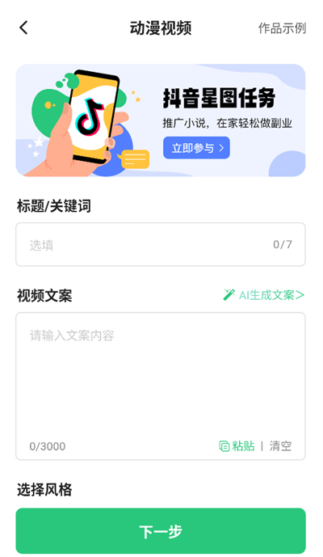

用 Super AI 踩过的五个坑，别再犯了
Super AI 看着就是个拍 AI 短视频的 App，我从安装到导出踩了五个实打实的坑——解析包错误、装成同名山寨、水印抠不干净、首尾帧翻车、AI 文案直接发被查重。一条一条说清楚怎么救。
我第一次用 Super AI 是被朋友拉着做短视频带货的。他说这东西太简单了，传两张图就能出一条剧情短视频，新手零门槛。结果我从安装到第一条视频发出去，前前后后踩了五个坑，有一个差点让我把手机恢复出厂设置。
坑一：装了个假的 Super AI
这是最冤的一个。我在应用商店搜 "Super AI"，出来至少三四个结果，图标长得还都差不多。随手点了一个下载，装完打开一看首页是个 AI 聊天机器人，跟朋友说的"剧情带货""数字人"完全不搭。
以为是自己没找到正确的功能入口，瞎捣鼓了半小时才意识到——我装错了。Super AI 这个名字至少有三款不同的产品，我装的是一款做 AI 对话的，七麦科技那款做视频创作的根本没下到。其实拿不准的时候去 Super AI官网 瞅一眼产品界面截图，一眼就能对上正主。
怎么分辨：安卓装完在设置里搜包名 com.chatai.superai，能对上才是正主；iOS 看 App Store 开发者署名是"雪 巩"。功能上更明显——首页有没有"剧情带货""AI 漫剧""数字人"这几个入口，一眼就能看出来。

坑二：解析包错误，怎么装都装不上
翻网盘下的 APK，点开就弹"解析软件包时出现问题"。以为是手机系统太旧，查了下安卓版本是 8.0，远高于 Super AI 要求的 5.2。那就是 APK 文件本身坏了——下载中途断流，文件不完整。
重新从下载渠道拿了一次还是不行，这次换了下载方式。之前用手机浏览器下的，这次改用网盘 App 直下，结果就装上了。原来浏览器下载大文件（Super AI 安装包 227MB）时容易静默截断，看起来下完了实际上缺了一截。
如果换下载方式还装不上，再查空间。之前装旧版没卸干净、手机剩余空间不够（解压后要 2GB 以上），也会卡进度条停在 80% 不动。卸旧版之前记得把已导出的作品存到相册，不然会跟着删。
坑三：想抠掉水印，反而越抠越丑
免费版导出的视频右下角带 Super AI 的 Logo 水印，发自己的账号不好看。搜了一下发现有不少第三方工具号称能一键去水印，我下了两个，一个是录屏再裁剪画面（裁完视频画幅变了，画面比例怪），另一个是自动填色（抠出来的那一片像被打了马赛克，细看痕迹明显）。
最后老老实实升了会员。会员版导出时直接勾选"无水印"选项，干净利落。虽然花了钱，但比抠半天水印出来个残次品强。顺带说一句，水印这事儿涉及版权边界——你自己的素材没问题，但纯 AI 生成、一点自己的东西都没加的内容，商用的时候要留意平台查重。
坑四：首尾帧视频翻车，中间帧像被诅咒了
看到 Super AI v6.0 新出的首尾帧功能，觉得特别酷——上传两张照片，AI 自动补中间帧生成完整视频。我找了一张"清晨咖啡馆"和一张"黄昏海边"的照片，想做个穿越感短片。
结果跑了三次，三次都翻车。第一次中间帧出现了咖啡馆和海边的诡异拼接，一半是木纹桌面一半是沙滩；第二次画面比例乱了，横屏变竖屏再变横屏；第三次倒是比例对了，但人物突然多了个胳膊。
后来才反应过来，我选的两张照片风格差太远、分辨率也不一样。AI 补中间帧不是魔法，它需要两张照片有一定的关联性才能自然过渡。同方向同分辨率是基本要求，风格接近、元素有联系（比如都是街景只是时间不同）的话效果就好很多。现在每次跑首尾帧我都先确认这两点，翻车率降了一大截。

坑五：AI 写的文案直接发，被平台查重打了
视频做完需要配一段朋友圈带货文案，就让 Super AI 的 AI 写作帮忙写了三条，挑了一条直接发了小红书。第二天看数据，浏览量比平时发的低了一截。搜了一下发现有人用了几乎一样的文案，平台查重识别出重复了。
AI 会说"这是原创"，但大模型训练时见过太多类似内容，生成的东西很容易和网上已有的撞上。平台查重系统虽然不是 100% 准确，但重复度高了一定会被卡。我现在的做法是：AI 给我打底框架和结构，我自己改 20% 以上——换几个词、加一两句个人化的感受（比如"我自己试了一下真的好用"），整篇立刻活起来。
另外事实核查也不能省。AI 有时会编造看起来合理但实际错误的信息，涉及具体数据、时间、人名的时候一定要自己核对。比如我让它写一个产品卖点，它编了个"月销十万件"的数字，幸亏我多嘴去查了下真实数据是三万。遇到拿不准的参数或具体操作，去Super AI文档里翻一下排查指南比瞎试强。
防坑清单
- 装之前先核对包名
com.chatai.superai或 iOS 开发者署名"雪 巩"，别碰同名山寨 - 大 APK 用网盘 App 直下，别用浏览器，防止下载截断
- 免费版水印别抠，升会员直接无水印导出
- 首尾帧视频必须同方向同分辨率、风格相近，别让 AI 做不可能的过渡
- AI 写的文案改 20% 以上再发，加自己的真实感受才能过查重
知道这些坑之后，Super AI 其实相当省心——它的 AI 模型（DeepSeek R1、豆包 Pro 这些大模型打底）能力确实够用，灵感页里的爆款模板直接点"生成同款"换自己的素材，出来的东西不会差到哪去。关键是别想当然，每一步都有它该注意的地方。
我把这套东西同步维护在三个仓库里方便随时查和复用，想细看的话可以去 GitHub、Gitee 或 GitCode，路径都在下载分类下的 Super AI 子目录。